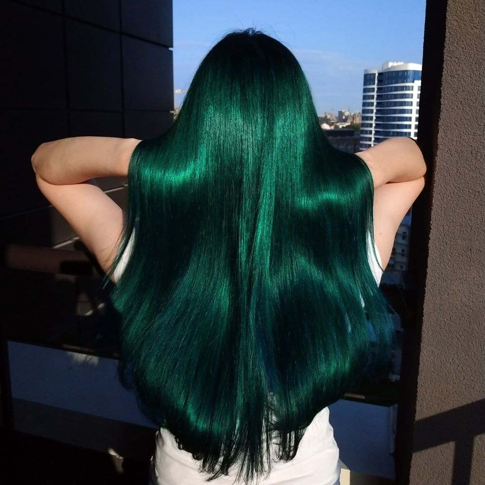
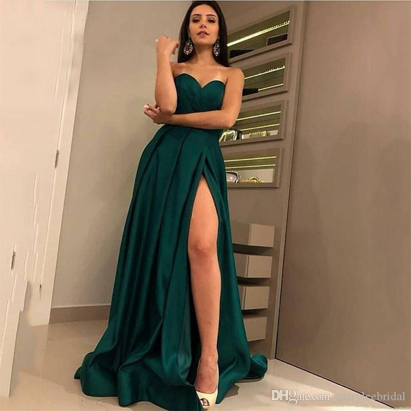
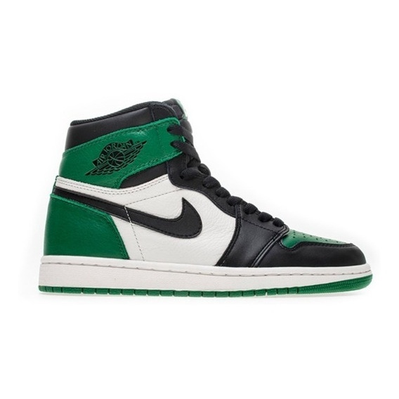

O verde é uma cor calmante que harmoniza
e equilibra. Representa as energias da
natureza, da vida, esperança e perseverança.
Místicos acreditam que facilita a comunicação
com as plantas e os devas da natureza. Simboliza
a renovação, fertilidade, crescimento e saúde.
Em excesso estimula orgulho, a presunção e a arrogância.
O verde escuro está associado ao masculino,
lembra grandeza, como um oceano. É uma cor que
simboliza tudo o que é viril.


